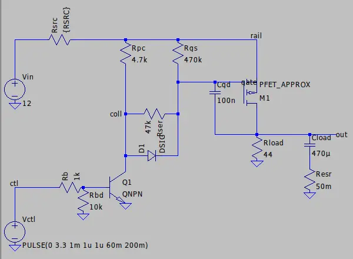

Managed power distribution board for an SBC home server
One 12 V / 150 W supply, a custom PCB, and an ESP32-S3 that switches every port remotely, measures what each device draws, and protects each port from overcurrent and inrush. It's also my planned bachelor's thesis at VŠB-TUO.
The problem
My home server is turning into a 3D-printed rack of single-board computers: a Radxa Dragon Q6A (main server), a Cubie A5E (network gateway), a ROCK 5T and a Raspberry Pi 4B, plus a bench of about 18 microcontroller boards used as a sensor mesh and firmware test bench.
Everything runs from one Mean Well LRS-150-12 (12 V, 12.5 A). That's about 120 W continuous with margin. If every board pulled its rated maximum at once the total would sit right at that line. That limit is the reason for the board: switch devices on only when they're needed, see exactly what each one draws, and make sure a fault on one port can't take down the rest.
Requirements
- Generate 12 V, 5 V and 3.3 V rails on the board, with each port wired to the rail its device needs.
- Switch each port independently from a phone (web UI over Tailscale, never exposed to the internet).
- Measure voltage, current and power per SBC port and report it as telemetry.
- Overcurrent protection and soft-start, so SBC input capacitors don't slam the rail at power-on.
- Status LEDs per port, and switched, monitored fans on the 12 V rail.
- Ports must never twitch on while the controller boots, and must not drop when the controller reboots.
Architecture
The rail plan came straight from datasheets. I'd assumed the SBCs were all 5 V, but the Dragon Q6A only accepts 12 V and the ROCK 5T takes 9–20 V. So two SBC ports sit on 12 V and two on 5 V, which shrank the 5 V converter from a guessed 15–20 A to about 6 A for the SBCs plus about 5 A for the bench.
Key decisions
| Decision | Why |
|---|---|
| Single-rail 12 V industrial supply (LRS-150-12) | Compact, quiet, screw terminals, whole budget on 12 V. The 150 W limit is what makes managed switching worth it. |
| High-side P-FET + NPN driver per port | Keeps every device's ground connected. The ESP32's 3.3 V GPIO can't drive a P-FET gate on a 5 V or 12 V rail directly. |
| FET chosen per rail | The AO3401 is logic-level but only rated ±12 V gate-source, so on 12 V it needs a ±20 V part or a clamped gate. |
| INA226 with 10 mΩ shunts on SBC ports | 8.19 A full scale at 250 µA resolution. The breakout's 0.1 Ω shunt tops out around 0.8 A. |
| Two 5 V buck converters (SBC + bench) | A shorted microcontroller can't brown out the Pi. Sensing each input and output gives live converter efficiency. |
| Port state held by an I2C I/O expander | Otherwise any ESP32 reset (crash, watchdog, firmware update) would switch off the gateway and the main server. The gateway and main server default to on, the rest to off. |
| Staged bring-up, fused, one change at a time | No bench supply yet, so the fuse is the current limit, and a failure always points at the last thing added. |
| Gate-drain (Miller) soft-start Proposed | See below. It gets accepted once the scope capture matches the simulation. |
Soft-start: what the simulation caught
The obvious way to soften turn-on is to slow the gate: a series resistor between the driver and the gate, plus a capacitor from gate to source. Before building it I simulated it in LTspice, and it had two problems:
- The 10 kΩ gate pull-up and the series resistor form a voltage divider:
Vgs = −Vrail · Rpu / (Rpu + Rser). With 47 kΩ at 12 V that's −2.1 V, below the FET's threshold, so it never turns on. - A gate-source capacitor only delays turn-on. During switching the gate sits on the Miller plateau, so the output still slews fast and inrush peaks at 7.4 A.
The fix moves the capacitor to gate → drain, where it sets the output slew directly (dV/dt ≈ Igate / Cgd, so inrush ≈ Cload · dV/dt). It makes the gate-source resistor much larger than the series one (470 k / 47 k → about −10.9 V, which also clamps Vgs safely). And it adds a 4.7 kΩ + diode path so turn-off stays fast, which matters for overcurrent cut-off.


| Variant | Peak inrush | Vgs when on | Output rise | Turn-off |
|---|---|---|---|---|
| Hard switch (breadboard as built) | 129 A | −12.0 V | 62 µs | 0.07 ms |
| Gate-source cap, 10 kΩ series | 7.4 A | −6.0 V | 1.0 ms | 6.8 ms |
| Gate-source cap, 47 kΩ series | never on | −2.1 V | – | – |
| Miller cap + fast turn-off (proposed) | 1.08 A | −10.9 V | 5.5 ms | 0.71 ms |



These are simulations with approximate models. The real test is Stage 3: the same circuit on the breadboard, captured on a lab oscilloscope, hard-switched vs. soft-start. That capture decides whether the design is accepted.
Status & timeline
- Jun 2026
Scoped the board as distribute / switch / sense / protect. Chose and ordered the LRS-150-12.
- Jun 2026
Prototype parts in: ESP32-S3-DevKitC-1, AO3401 and IRF4905 P-FETs, INA226 breakout, power resistors, 470 µF caps.
- 26 Jun 2026
Stage 0 working: high-side switch + NPN driver on 3.3 V. Fixed a floating-input bug with a base pulldown.
- Sep 2026
Supply wired with an earthed mains cord and trimmed to 12.00 V.
- 29 Sep 2026
SBC power requirements from datasheets, a design review and soft-start simulations. Decided the rail plan, reset behaviour and the 5 V split.
- Next
Stage 2: INA226 sensing, checked against a multimeter.
- Next
Stage 1: 12 V through a fuse with the IRF4905. Then Stage 3: soft-start on the scope.
- Later
Schematic and PCB rev-A in Altium, firmware and web UI, enclosure, then 24/7 operation with long-term logging.
What I've learned so far
- Always define the off state. The first breadboard switched on when I touched a resistor, because my body was acting as an antenna on a floating transistor base. A 10 kΩ pulldown fixed it for good.
- Check absolute maximums before drawing anything. The AO3401's ±12 V gate rating rules it out on 12 V without a clamp.
- Simulate the obvious fix. The soft-start divider would have cost a lab session to find on the bench.
- Safe defaults have a flip side. "Everything off on reset" also means a firmware update would reboot my whole network.
- Read the datasheet before assuming. Two of the four "5 V" boards turned out to be 12 V boards.
The full project (decision records, dated lab notebook, SPICE files, test firmware and measurement plan) is documented in a repository that I'll make public once it's tidy.